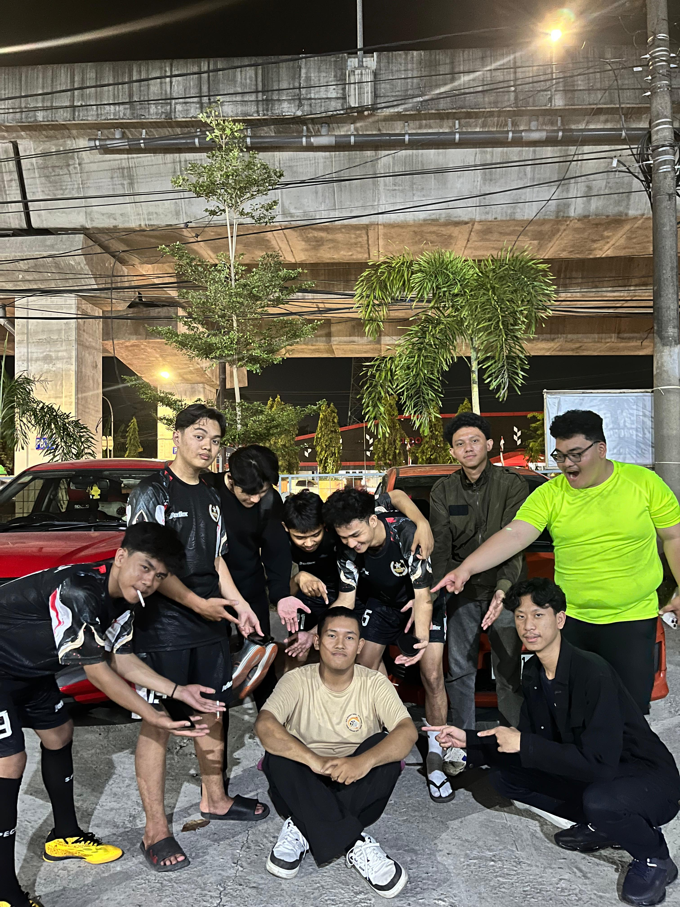

Nama : Maikel Basten
NIM : 230209502102
Kelas : PTIKH
Alamat : Jl. Raya pendidikan
Asal Sekolah SMAN1 Mamasa
ICE SPORT 2024 |
|---|
| Pada bulan Juli sampai Agustus kemarin, saya mengikuti ICE SPORT,
yang merupakan ajan olahraga yang diadakan setiap tahun, yang terdiri dari berbagai cabang olahraga yang diikuti
oleh perwakilan dari setiap kelas di Jurusan Teknik Informatika dan Komputer (JTIK).
Kegiatan ini bertujuan untuk mengasah dan mengembangkan bakat mahasiswa secara
sportif dan juga sebagai ajang membangun silaturahmi untuk membangun dan mempererat
hubungan antar mahasiswa JTIK.
Pada ICE SPORT tersebut terdapat beberapa ketentuan untuk dapat mengikuti cabor yang ada. Salah satunya adalah ramput harus rapi (tidak boleh gondrong), tapi pada saat itu rambut saya sudah hampir sebahu dan saya masuk dalam tim futsal kelas saya. Dalam posisi tersebut saya dilemah antara memangkas rambut saya yang telah saya perjuangkan selama berbulan bulan, atau tidak cukur rambut tapi tidak mengikuti ajang tersebut yang menurut saya sangat seru untuk diikuti. Setelah bepikir cukup lama sayapun memutuskan untuk memangkas rambut saya. Saya pikir di lain waktu saya masih bisa memanjangkan rambut saya walaupun sebenarnya berat hati. Menariknya saya cukur rambut sampai 4 kali dari saya main Futsal petama kali sampai saya main di final. Ini terjadi karena saya mencukur rambut saya sedikit dikarenakan saya sangat berat hati untuk mencukur rambut saya. Sehingga panitia pelaksanapun terus menegur saya sebelum saya mencukur rambut saya yang ke 4 kalinya di mana pada kali yang ke 4 tersebut rambut saya sudah di atas alis. Sampai sekarang saya masih merindukan rambut gondrongku:) |
Daftar Mata kuliah Yang telah dipelajari :
|
| Daftar Dosen :
|
| Foto :
 |
Daftar 4 teman dekat :
| No | Nama | Jenis Kelamin | Alamat | Asal Sekolah | |
|---|---|---|---|---|---|
| Lengkap | Panggilan | ||||
| 1 | Muh. Fuad | Fuad | Laki-Laki | Enrekang | Kurang tau:) |
| 2 | Muh. Alief Rezky Anisar | Alif | Laki-laki | Makassar | SMAGA Makassar |
| 3 | Muh. Ma'ruf | Mayor | Laki-laki | Mamuju | Kurang tau:) |
| 4 | Muh. Rifki Adryan | Rifki | Laki-laki | Makassar | MAN2 |